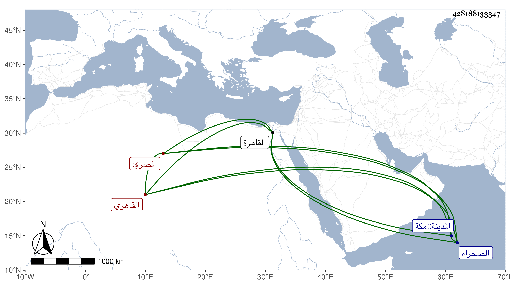

0902Sakhawi.DawLamic.ITO20230111-ara1.EIS1600.428188133347
Biography ID: 428188133347
1117
شاكر بن عبد الغني بن شاكر بن ماجد بن عبد الوهاب بن يعقوب علم الدين بن فخر الدين بن علم الدين المصري الأصل القاهري أحد الأعيان ، وأكبر أشقائه الخمسة أمهم ابنة مجد الدين كاتب المماليك في الأيام الناصرية ، ويعرف كسلفه بابن الجيعان . ولد في سنة تسعين وسبعمائة تقريبا بالقاهرة ونشأ بها وتدرب بأبيه وجده لأمه وغيرهما في الخدمة المباشرة وغيرها إلى أن مهر وبواسطة جده لأمه اشتهر في الدولة فإنه كان يباشر عنه إذا غاب واستقر بعد والده في كتابة الجيش ثم قرره المؤيد بسفارة الزيني عبد الباسط في عمالة المؤيدية واقتدى به في ذلك الاشرف برسباي وفي أيامه كان يتكلم عن الزين المشار إليه في الخزانة وغيرها ورقاه جدا ثم صارت الخزانة بعد اليهم مضافا لما كان معهم من استيفاء ديوان الجيش ، ولا زال في ارتقاء وعلو إلى أن صار مرجعا في الدول وعرف بجودة الرأي وحسن التدبير ووفور العقل وقوة الجنان وعدم المهابة للملوك فمن دونهم من غير إخلال بالمداراة مع السكون والتواضع والبذل الخفي ، وله مآثر وقرب منها الجامع الذي بالقرب من أرض الطبالة المعروفة الآن ببركة الرطلي وجامع بالخانقاه السرياقوسية وخطبة بمكان الآثار الشريف كانت نيته فيها صالحة وإن كان الوقت غير مفتقر إليها وبر كثير للفقراء وأهل الحرمين بل وغالب من يقصده وقرب من المنسوبين للصلاح والاكثار من زيارتهم والتأدب معهم والمبادرة لمآربهم والحفظ لأهل البيوت والتوجع لمن يتأخر منهم واستجلاب من يفهم عنه نوع جفاء بالاحسان ومن محاسنه انه اضطر بالزحام للوقوف عند سبيل المؤيد بالشارع و ... شاعرا يقرأ على المتولي للسقي فيه وظهره للمارة قصيدة له يهجو فيها بعض الاقباط من غير تعيينه فسمع منها إلى أن زال الزحام ثم انصرف وأمر من معه بطلب الشاعر له إلى بيته فقال له من هذا التعس الذي وصفته بما سمعته فأعلمه به وذكر له السبب المقتضي لذلك فعذره وبالغ في تقبيح المهجو ثم قال أيمكنك أن تعطيني هذه القصيدة وتمحو مسودتها إن كانت وأصالحك عنه بكذا فأذعن أو معنى هذا ، وليتني أعلم من يغار من الفقهاء لأبناء جنسه كهذا ، وحج مرارا وفجع بجميع اخوته فصبر . قال فيه ابن تغري بردى وهم أي الاخوة أصحاب الحل والعقد في الدولة في الباطن وإن كان غيرهم في الظاهر فهم الاصل قال وبالجملة فهم أصلح أبناء جنسهم انتهى . وأنجب أولادا أجلهم علما وحلما وتواضعا ومحاسن الشرفي يحيى بل هو فريد في مجموعه ولم يزل على وجاهته حتى مات في ليلة الجمعة رابع عشر ربيع الآخر سنة اثنتين وثمانين بمنزله ببركة الرطلي وصلى عليه من الغد برحبة مصلى باب النصر في مشهد حافل جدا مع غيبة العسكر ثم دفن بتربتهم جوار الاشرفية برسباي من الصحراء ورأيت له بعد مديدة مناما يشهد بخير ثم آخر ، وكان قد أجاز له باستدعاء مؤرخ بشعبان سنة ست وثمانمائة من أجل اختصاص عمه التاج عبد اللطيف ببعض المحدثين جماعة كثيرون منهم ابن صديق وعائشة ابنة ابن عبد الهادي والزين المراغي والمجد اللغوي والصلاح الارموي والجمال الحنبلي فاستجيز لذلك رحمه الله وإيانا وعفا عنا .
